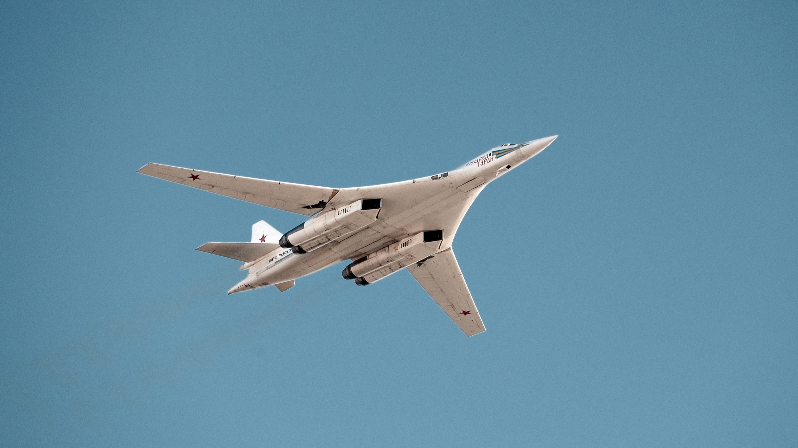
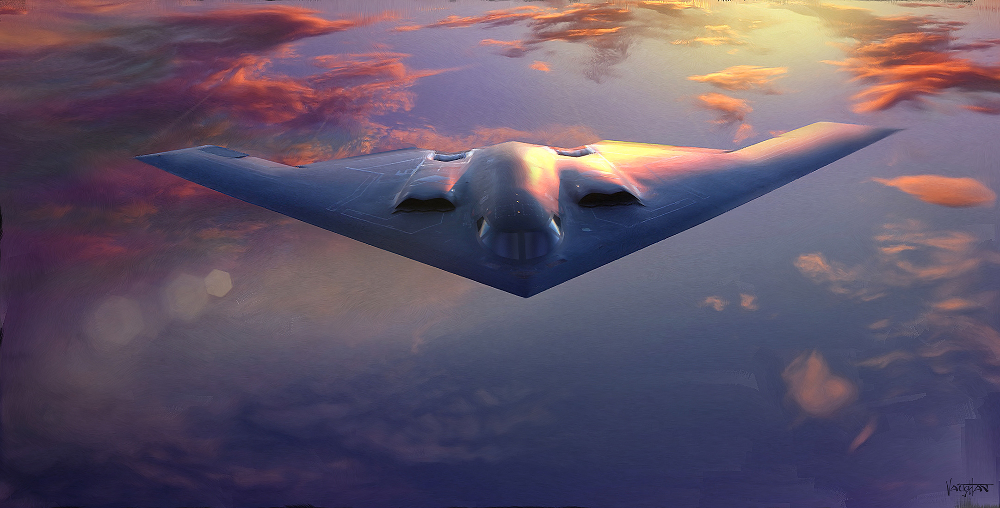

A bomber is a combat aircraft designed to attack ground and naval targets by dropping air-to-ground weaponry (such as bombs), launching torpedoes, or deploying air-launched cruise missiles. The first use of bombs dropped from an aircraft occurred
in the Italo-Turkish War, with the first major deployments coming in the First World War and Second World War by all major airforces causing devastating damage to cities, towns, and rural areas. The first purpose built bombers were the Italian
Caproni Ca 30 and British Bristol T.B.8, both of 1913. Some bombers were decorated with Nose art or Victory markings. There are two major classifications of bomber: strategic and tactical. Strategic bombing is done by heavy bombers primarily
designed for long-range bombing missions against strategic targets to diminish the enemy's ability to wage war by limiting access to resources through crippling infrastructure or reducing industrial output. Tactical bombing is aimed at countering
enemy military activity and in supporting offensive operations, and is typically assigned to smaller aircraft operating at shorter ranges, typically near the troops on the ground or against enemy shipping.

Tupolev Tu-160
The Tupolev Tu-160 (Russian: Туполев Ту-160 Белый лебедь, romanized: Belyj Lebeď, lit. 'White Swan';NATO reporting name: Blackjack) is a supersonic, variable-sweep wing heavy strategic bomber designed by the Tupolev Design Bureau in the
Soviet Union in the 1970s. It is the largest and heaviest Mach 2+ supersonic military aircraft ever built and second only to the XB-70 Valkyrie in overall length.It is the largest and heaviest combat aircraft, the fastest bomber now
in use and the largest and heaviest variable-sweep wing airplane ever flown.Entering service in 1987, the Tu-160 was the last strategic bomber designed for the Soviet Union. As of 2016, the Russian Air Force's Long Range Aviation branch
has at least 16 aircraft in service.The Tu-160 active fleet has been undergoing upgrades to electronics systems since the early 2000s. The Tu-160M modernization programme has begun with the first updated aircraft delivered in December
2014.

Northrop Grumman B-2 Spirit
The Northrop (later Northrop Grumman) B-2 Spirit, also known as the Stealth Bomber, is an American heavy strategic bomber, featuring low observable stealth technology designed for penetrating dense anti-aircraft defenses; it is a flying
wing design with a crew of two.The bomber can deploy both conventional and thermonuclear weapons, such as up to eighty 500-pound class (230 kg) Mk 82 JDAM Global Positioning System-guided bombs, or sixteen 2,400-pound (1,100 kg) B83
nuclear bombs. The B-2 is the only acknowledged aircraft that can carry large air-to-surface standoff weapons in a stealth configuration. Development started under the "Advanced Technology Bomber" (ATB) project during the Carter administration;
its expected performance was one of the President's reasons for the cancellation of the Mach 2 capable B-1A bomber. The ATB project continued during the Reagan administration, but worries about delays in its introduction led to the
reinstatement of the B-1 program. Program costs rose throughout development. Designed and manufactured by Northrop, later Northrop Grumman, the cost of each aircraft averaged US$737 million (in 1997 dollars).Total procurement costs
averaged $929 million per aircraft, which includes spare parts, equipment, retrofitting, and software support.The total program cost, which included development, engineering and testing, averaged $2.1 billion per aircraft in 1997.

Boeing B-52 Stratofortress
The Boeing B-52 Stratofortress is an American long-range, subsonic, jet-powered strategic bomber. The B-52 was designed and built by Boeing, which has continued to provide support and upgrades. It has been operated by the United States
Air Force (USAF) since the 1950s. The bomber is capable of carrying up to 70,000 pounds (32,000 kg) of weapons,[5] and has a typical combat range of more than 8,800 miles (14,080 km) without aerial refueling.[6] Beginning with the
successful contract bid in June 1946, the B-52 design evolved from a straight wing aircraft powered by six turboprop engines to the final prototype YB-52 with eight turbojet engines and swept wings. The B-52 took its maiden flight
in April 1952. Built to carry nuclear weapons for Cold War-era deterrence missions, the B-52 Stratofortress replaced the Convair B-36. A veteran of several wars, the B-52 has dropped only conventional munitions in combat. The B-52's
official name Stratofortress is rarely used; informally, the aircraft has become commonly referred to as the BUFF (Big Ugly Fat Fucker/Fella).

Rockwell B-1 Lancer
The Rockwell B-1 Lancer[N 1] is a supersonic variable-sweep wing, heavy bomber used by the United States Air Force. It is commonly called the "Bone" (from "B-One").[3] It is one of three strategic bombers in the U.S. Air Force fleet as
of 2020, the other two being the B-2 Spirit and the B-52 Stratofortress. The B-1 was first envisioned in the 1960s as a platform that would combine the Mach 2 speed of the B-58 Hustler with the range and payload of the B-52, and was
meant to ultimately replace both bombers. After a long series of studies, Rockwell International (now part of Boeing) won the design contest for what emerged as the B-1A. This version had a top speed of Mach 2.2 at high altitude and
the capability of flying for long distances at Mach 0.85 at very low altitudes. The combination of the high cost of the aircraft, the introduction of the AGM-86 cruise missile that flew the same basic profile, and early work on the
stealth bomber all significantly affected the need for the B-1. This led to the program being canceled in 1977, after the B-1A prototypes had been built.